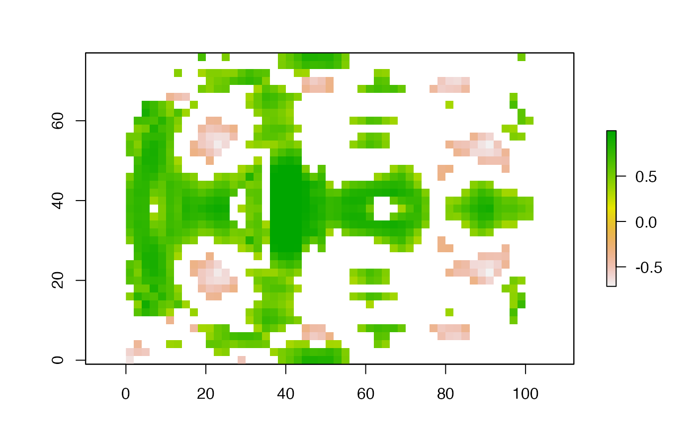

corLocal.RdLocal correlation coefficient for two RasterLayer objects (using a focal neighborhood) or for two RasterStack or Brick objects (with the same number of layers (> 2))
# S4 method for RasterLayer,RasterLayer corLocal(x, y, ngb=5, method=c("pearson", "kendall", "spearman"), test=FALSE, filename='', ...) # S4 method for RasterStackBrick,RasterStackBrick corLocal(x, y, method=c("pearson", "kendall", "spearman"), test=FALSE, filename='', ...)
| x | RasterLayer or RasterStack/RasterBrick |
|---|---|
| y | object of the same class as |
| ngb | neighborhood size. Either a single integer or a vector of two integers c(nrow, ncol) |
| method | character indicating which correlation coefficient is to be used. One of |
| test | logical. If |
| filename | character. Output filename (optional) |
| ... | additional arguments as for |
NA values are omitted
RasterLayer
b <- stack(system.file("external/rlogo.grd", package="raster")) b <- aggregate(b, 2, mean) set.seed(0) b[[2]] <- flip(b[[2]], 'y') + runif(ncell(b)) b[[1]] <- b[[1]] + runif(ncell(b)) x <- corLocal(b[[1]], b[[2]], test=TRUE ) # plot(x) # only cells where the p-value < 0.1 xm <- mask(x[[1]], x[[2]] < 0.1, maskvalue=FALSE) plot(xm)  # for global correlation, use the cor function x <- as.matrix(b) cor(x, method="spearman") #> red green blue #> red 1.0000000 0.5090865 0.9423498 #> green 0.5090865 1.0000000 0.4608823 #> blue 0.9423498 0.4608823 1.0000000 # use sampleRegular for large datasets x <- sampleRegular(b, 1000) cor.test(x[,1], x[,2]) #> #> Pearson's product-moment correlation #> #> data: x[, 1] and x[, 2] #> t = 12.743, df = 970, p-value < 2.2e-16 #> alternative hypothesis: true correlation is not equal to 0 #> 95 percent confidence interval: #> 0.3235099 0.4312967 #> sample estimates: #> cor #> 0.3786866 #> # RasterStack or Brick objects y <- corLocal(b, flip(b, 'y'))